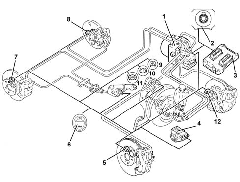
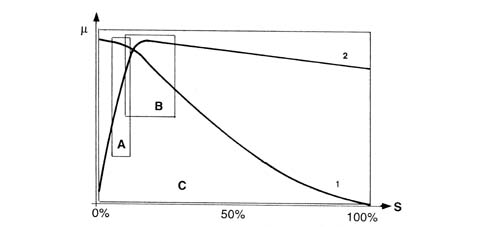
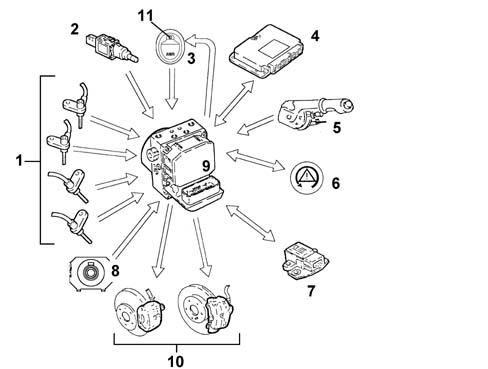
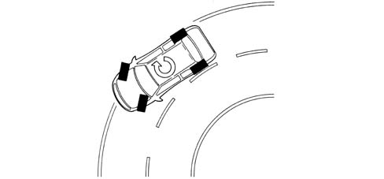
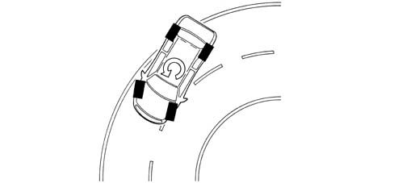
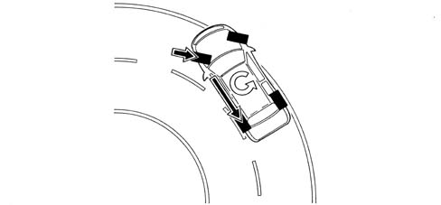
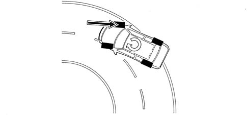
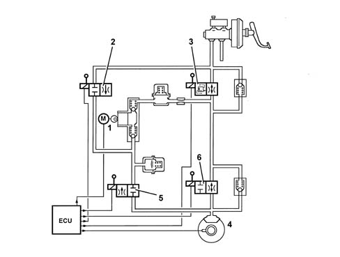

3350E vehicle direction control system vdc
- Path
- Descriptions > 33 BRAKING SYSTEM > 3350 DRIVE CONTROL' > 3350E vehicle direction control system vdc
- Kind
- system description
- Applies to
- all engines; all production periods
- Interactive page
- https://sloeber94.github.io/elrnDB-fMltpl/en/#/2888266
Applies to: all engines; all production periods
ESP vehicle stability control system
VIEW OF ASSEMBLY

1 - ABS/ESP control unit 2 - Steering angle sensor 3 - Engine management control unit 4 - Lateral yaw/acceleration sensor 5 - Right front wheel sensor 6 - ASR off button 7 - Right rear wheel sensor 8 - Left rear wheel sensor 9 - ESP warning light 10 - EBD warning light 11 - ABS warning light 12 - Left front wheel sensor
SPECIFCATIONS
Driving a car in conditions that may lead to the limit of grip and thus of stability may be a difficult task for a normal driver even if the car is stable. To improve driving safety, it is therefore possible to fit an electronic system able to help the driver in this difficult task.
Systems currently used to make driving safer under certain conditions are mainly A.B.S. for braking control and T.C. and A.S.R. traction control systems during acceleration that work through action on the brakes and traction/torque during acceleration and overrun through action on the brakes and on the engine control system motorized throttle (A.S.R./M.S.R.).
The ESP system (Electronic Stability Program) incorporates all the functions listed above and optimises vehicle control with the addition of specific sensors:
- steering angle sensor on the steering wheel
- yaw/side acceleration sensor located near the centre of gravity beneath the central tunnel

μ - wheel grip S - slip A - EBD intervention area B - ABS intervention area C - ESP intervention area 1 - Side force curve 2 - Longitudinal force curve
As may be seen from the grip/slip diagram, the ESP system covers a bigger area than a conventional ABS/EBD.
The ESP cannot be cut out because it is a safety system; the ASR/MSR function can, however, be cut out by means of a button on the central facia
ESP system intervention is indicated by a special warning light on the instrument panel node.
Components
The ESP system consists of:
- a special A.B.S.5.7 hydraulic/electronic control unit (with ESP function)
- interface with the CAN line resident in the ABS control unit for communication with the engine management control unit and the steering angle sensor
- magnetoresistive wheel speed sensors
- steering angle sensor,
- yaw/side acceleration sensor integrated within a single component
- brake fluid pressure sensor integrated in the ABS control unit
- ESP warning light in the instrument panel
- A.S.R. deactivation switch with LED in the button
OPERATION
The ESP system continuously detects loss of longitudinal and transverse wheel grip under all driving conditions, from braking to acceleration, to ensure vehicle directionality and stability.
The ESP system is managed by a Bosch 5.7 ABS ECU integral with a special hydraulic control unit that makes it possible for the brake system to be operated independently of the driver.
The control unit processes the following signals:
- steering angle/steering wheel rotation speed
- side acceleration and yaw
- motorised throttle position
- wheel rpm
- hydraulic braking system pressure
and uses special algorithms in the software to obtain the values for dynamic control of the vehicle:
- longitudinal and transverse slip between wheels and road surface
- axle drift.
The system calculate actual vehicle dynamics from these values; identifying all critical conditions due to environmental factors, (e.g. surface with poor grip) or any mistakes made by the driver (e.g. panic situations) to restore the car to efficient handling conditions by adjusting the brakes and drive torque.
The system interfaces with:
- the engine management control unit for torque adjustment,
- the instrument panel for operating the warning lights.
Information is exchanged between these components by means of the CAN line.
System diagnosis is carried out via a dedicated line (K line).
The system is linked to a power unit with a special brake pump; the pipes between brake pump and ABS control unit are also fitted with a Titaflex insert because the pipe diameter is bigger (6 mm) than normal pipes (4 mm). this is to prevent negative effects on ESP operation at low brake fluid temperatures.
The ESP comes on automatically when the vehicle is started up and cannot be switched off by the driver. the button on the central console turns off only the ASR function and only in recommended circumstances (see ASR system)

INPUT SIGNALS
- Wheel speed sensors (1)
- Brake pedal switch (2)
- ASR button (3)
- Engine management control unit (4)
- Handbrake lever position (5)
- Warning light status indicator (6)
- Yaw sensor (rotation around the vehicle vertical axis) (7)
- Lateral acceleration sensor (7)
- Steering angle/steering wheel rotation sensor (8)
- Hydraulic system pressure sensor(9)
OUTPUT SIGNALS
- Brake pressure modulation command (10)
- Engine management command (4)
- ESP warning light in panel (6)
- ASR LED (11)
OPERATING LOGICS
As explained previously, the ESP controls longitudinal vehicle slip and also transverse slip, i.e. vehicle lateral stability.
Vehicle lateral stability is provided by tyre reaction to lateral forces and depends on the strength with which the wheel grips the road surface.
A wheel's adhesive force depends on vertical load, which depends in turn on wheel situation (supporting or unladen) and friction coefficient, which depends in turn on surface and tyre conditions.
When the vehicle is moving in a straight line, the effect of side forces may be disregarded, unless external factors increase their intensity (e.g. wind gusts or changeover to a different surface). Conversely, when the car corners, side forces increase greatly due to the increase in centrifugal force.
The action of side forces brings about a change in wheel drift angle and thus a change in axle drift (drift angle = difference between required trajectory and actual trajectory).
The side forces do not act equally on all four wheels because the wheels are not subject to the same load conditions. Wheels are loaded differently in different situations. The following situations may occur:
- acceleration (lightening of front axle and loading of rear axle)
- braking (loading of front axle and lightening of rear axle)
- right/left bend (loading of outside wheels and lightening of inside wheels)
- cornering while accelerating/decelerating (combination of the above cases)
If the side forces acting on individual wheels vary, it follows that the resultant forces acting on the car axles also vary. This means that if side forces acting on the front axle prevail over the forces acting on the rear axle or viceversa, the vehicle's vertical axis (yaw axis) is subject to a rotatory force (moment)
The yawing moment affects car behaviour and generates a state of understeer or oversteer.
A vehicle is said to be understeered when the front axle drift angle increase to a greater extent than that of the rear axle when subject to increasing side acceleration. In this case, the car tends to go straight when turning a corner (it tends to take the curve wide).

A car is said to be oversteered when the rear axle drift angle increases to a greater extent than that of the front axis with increasing transverse acceleration. In this case, the vehicle tends to spin around (the rear axle tends to go straight and the vehicle cuts the corner.

To keep the influence of side forces under control and thus limit the yawing moment, the ABS 5.7 control unit must firstly compute the vehicle behaviour set by the driver on the basis of:
- steering angle sensor/steering wheel rotation speed
- accelerator pedal position.
- braking system pressure
after which the control unit assesses actual vehicle behaviour by means of:
- the sensors on the wheels (car speed/wheel speed)
- side acceleration sensor
- yaw sensor.
The above shows that the control unit is able to:
- perceive the driver's actions because steering wheel position shows the number of degrees by which (large radius or short radius bend) and the speed with which the steering wheel is turned (sudden or gradual turns). Throttle position and brake pressure also show whether the car is accelerating or braking. In other words, how the driver takes the corner or deviates from a straight trajectory.
- perceive actual vehicle behaviour on the basis of environmental variables e.g. slippery surface, car reactions to incorrect manoeuvres by the driver etc. in order to identify yawing moment and axle side slip by means of sensors on all four wheels and the yaw and side acceleration sensor.
These two operations are necessary to compare the mathematical model mapped in the control unit with actual car behaviour in order to identify vehicle status (understeer or oversteer) and decide the action to be taken on the brakes and engine
Understeering on corners
The control unit monitors to detect understeer (prevalence of front axle drift) and corrects car behaviour by braking the wheels on the inside of the bend to create an opposite moment in order to bring the car toward the middle of the bend and reducing drive torque if necessary.

Oversteering on corners
The car detects the presence of oversteer (prevalence of rear axle drift) and corrects vehicle behaviour by braking the front wheel on the outside of the bend to create an opposite yawing moment, possibly augmented by an increase in the driving torque.

Abrupt changes in straight trajectory (swerving/overtaking)
In the case of abrupt changes in trajectory (e.g. overtaking/swerving, the control unit identifies possible oversteer or understeer conditions and correct vehicle trajectory as described above.
Abrupt change in straight trajectory (driving over different surfaces)
The control unit can preceive deviations from the trajectory and prevalence of axle drift, and corrects the trajectory with appropriate actions on the brakes and engine.
Brusque acceleration/deceleration
The control unit implements the A.S.R. strategy controlling the vehicle's side acceleration and thus regulating the action on the front and rear brakes and driving torque more fully than on cars with ASR only.
Cutting out asr
If the A.S.R. is excluded, the following functions remain active:
- A.B.S./E.B.D.
- T.C. up to a speed of 40 km per hour
- partial ESP.
Esp intervention display
When the ESP system intervenes, a warning light on the control panel flashes (5 Hz c.c. 50%).
Component description
Hydraulic system operation
The hydraulic unit on the version with ESP comes with 4 additional solenoid valves.
When activated, the inlet solenoid valve (normally closed) can receive the additional quantity of fluid required to increase the pressure and brake the wheel/s.
The operating solenoid valve (normally open), when activated, allows the modulated pressure produced by the pump to be maintained in the circuit.
When the ESP does not intervene, the ECU:
- does not activate the inlet solenoid (N.C.) (2).
- does not activate the operating solenoid (N.0.) (3).
In this way the system operates like the Bosch 5.7 ABS.

During ESP intervention, the ECU:
- activates the hydraulic aggregate pump (1)
- activates the inlet solenoid (N.C.) (2)
- activates the operating solenoid (N.O.) (3).
Then pressure generated by pump (1) then reaches the brake calipers and is modulated, upon a command by the electronic control unit, by the de-pressurizing (5) and pressurizing (6) solenoid valves.